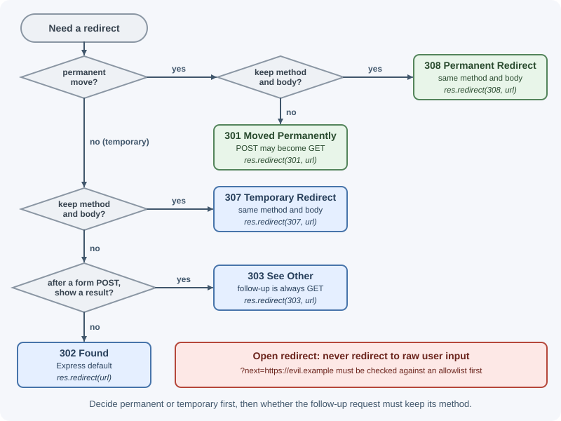
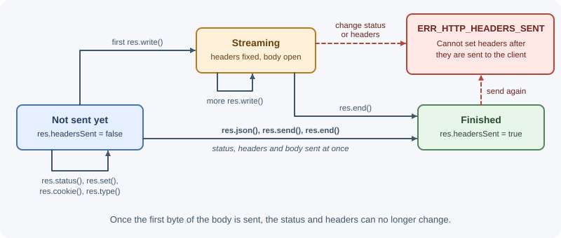

The Response Object¶
Every Express handler receives res, the object used to build and send
the HTTP response. It extends Node.js's http.ServerResponse with helpers
such as res.status(), res.json(), res.redirect(), and res.cookie().
A response is a status code, headers, and an optional body, and each
request gets exactly one.
Why it matters¶
Clients depend on the response contract: the status code tells them what
happened, the headers tell them how to interpret the body, and the body
carries the data. Sending the wrong status, the wrong Content-Type, or
two responses for one request produces confusing bugs. Some helpers also
carry security risks, such as serving files from a path the user
controls.
Real-world usage¶
- Stripe "uses conventional HTTP response codes to indicate the
success or failure of an API request": 2xx for success, 4xx for errors
caused by the request (such as a missing required parameter or a
declined card), and 5xx for problems on Stripe's side. Its reference
lists what each code means for its API, for example
401when no valid API key was provided and409for conflicts (Stripe API errors). - GitHub paginates large REST API results with a
linkresponse header that carriesrel="prev",rel="next",rel="first", andrel="last"URLs, the same kind of headerres.append("Link", ...)builds (GitHub pagination docs). - GitHub also returns an
etagheader on most endpoints. A client that repeats the request with that value receives304 Not Modifiedwhen nothing changed, and GitHub recommends authenticated conditional requests so that unchanged data does not count against the primary rate limit (GitHub REST API best practices). - Zalando's public RESTful API guidelines make "MUST use most specific HTTP status codes" a rule for its teams, so clients can react to the status alone (Zalando RESTful API Guidelines).
How it works¶
The parts of a response¶
HTTP/1.1 201 Created <- status line: res.status(201)
Content-Type: application/json; charset=utf-8 <- set by res.json()
Location: /api/v1/tasks/9 <- res.location() / res.set()
Set-Cookie: seen=1; Path=/; HttpOnly <- res.cookie()
ETag: W/"1b-..." <- generated by res.send()
{"id":9,"title":"Write notes"} <- body: res.json(...)
Headers must be set before the body starts. Once the first byte of the body has been sent, the status and headers are fixed.
Methods at a glance¶
| Method | Purpose | Ends the response? |
|---|---|---|
res.status(code) |
Set the status code; returns res for chaining |
No |
res.set(name, value) / res.header() |
Set a header (or several with an object) | No |
res.append(name, value) |
Add another value to a header (for example Link) |
No |
res.get(name) |
Read a header already set on the response | No |
res.type(type) |
Set Content-Type from a short name such as "json" |
No |
res.location(url) |
Set the Location header |
No |
res.cookie() / res.clearCookie() |
Set or clear a cookie | No |
res.attachment(filename) |
Mark the body as a download | No |
res.send(body) |
Send a string, Buffer, object, or array | Yes |
res.json(value) |
Send JSON | Yes |
res.sendStatus(code) |
Send a status with its standard text as the body | Yes |
res.redirect([status,] url) |
Send a redirect | Yes |
res.sendFile(path, options) |
Stream a file | Yes |
res.download(path, filename) |
Stream a file as an attachment | Yes |
res.render(view, locals) |
Render a template and send HTML | Yes |
res.end() |
End the response, optionally with raw data | Yes |
res.write(chunk) |
Send part of the body (Node.js method) | No |
res.status() and chaining¶
res.status(404).json({ error: "Task not found" });
res.status() only sets the code. Without a sending method, nothing is
sent. In Express 5 it throws if the value is not a valid integer status
code, which catches bugs such as res.status("404") or
res.status(undefined). For choosing codes, see
HTTP status codes.
res.send()¶
res.send() adapts to the type of its argument:
| Argument | Content-Type (if not already set) |
Notes |
|---|---|---|
| String | text/html; charset=utf-8 |
Set res.type("text") for plain text |
| Buffer | application/octet-stream |
Binary data |
| Object or array | application/json |
Delegates to res.json() |
It also sets Content-Length, generates an ETag header for the body,
and, when the request's If-None-Match matches that ETag, automatically
answers 304 Not Modified without a body. In Express 5,
res.send(404) no longer sets the status: it sends a 200 response whose
body is 404. Use res.sendStatus(404) or res.status(404).send(...).
res.json()¶
Serializes a value with JSON.stringify and sets
Content-Type: application/json unless you set a type first. Values that
JSON cannot represent are dropped or converted: undefined properties
disappear, Date objects become ISO strings, and a BigInt throws.
res.json({ id: 1, createdAt: new Date() });
// {"id":1,"createdAt":"2026-11-07T10:00:00.000Z"}
app.set("json spaces", 2) pretty-prints during development.
res.sendStatus() and res.end()¶
res.sendStatus(204); // 204 with no body
res.sendStatus(403); // 403 with body "Forbidden"
res.status(204).end(); // same as the first line
Headers: res.set(), res.append(), res.type()¶
res.set("Cache-Control", "no-store");
res.set({ "X-Request-Id": requestId, "X-Total-Count": "250" });
res.append("Link", '</api/v1/tasks?page=3>; rel="next"');
res.type("csv"); // Content-Type: text/csv; charset=utf-8
res.redirect()¶
Redirects send a Location header and a 3xx status. The default is
302 Found.
| Status | Meaning | Method on the follow-up request |
|---|---|---|
301 Moved Permanently |
Resource moved for good; clients may cache it | Browsers may change POST to GET |
302 Found |
Temporary redirect (Express default) | Browsers usually change POST to GET |
303 See Other |
"See the result at this URL" | Always GET; used after a form POST |
307 Temporary Redirect |
Temporary; repeat the same request elsewhere | Method and body preserved |
308 Permanent Redirect |
Permanent; repeat the same request elsewhere | Method and body preserved |

app.post("/login-form", (req, res) => {
// After a successful form POST, send the browser to a page with GET
res.redirect(303, "/dashboard");
});
Express 5 removed res.redirect("back"); use
res.redirect(req.get("Referrer") || "/"). Never redirect to a URL taken
directly from user input, such as ?next=https://evil.example, without
checking it against an allowlist: that is an open redirect.
res.cookie() and res.clearCookie()¶
res.cookie("sessionId", id, {
httpOnly: true, // not readable from JavaScript
secure: true, // only sent over HTTPS
sameSite: "lax", // limits cross-site sending
maxAge: 1000 * 60 * 60 * 8, // milliseconds (8 hours)
path: "/",
});
res.clearCookie("sessionId", { path: "/" }); // path/domain must match
maxAge is in milliseconds in Express. To clear a cookie, the path and
domain must match how it was set. Express 5 ignores maxAge and
expires passed to clearCookie(). Cookie security is covered in
cookies and sessions.
Files: res.sendFile(), res.download(), res.attachment()¶
import path from "node:path";
const reportsDir = path.resolve("storage/reports");
app.get("/reports/:name", (req, res, next) => {
// root restricts the file to reportsDir; ".." segments are rejected
res.sendFile(req.params.name, { root: reportsDir }, (error) => {
if (error) next(error);
});
});
app.get("/invoices/:id/download", (req, res) => {
const file = path.join(reportsDir, `invoice-${Number(req.params.id)}.pdf`);
res.download(file, "invoice.pdf"); // Content-Disposition: attachment
});
res.sendFile()needs an absolute path, or a relative path plus therootoption.- Building a path from user input without
rootcan let a request such as../../etc/passwdescape the intended folder: a path traversal attack. Prefer looking up files by id in your database. res.download()addsContent-Disposition: attachmentso the browser saves the file.res.attachment("name.csv")sets that header without sending.
res.locals and res.render()¶
res.locals holds data for the current request only. Template engines
can read it, and middleware can use it to pass values to later handlers.
app.use((req, res, next) => {
res.locals.currentYear = new Date().getFullYear();
next();
});
res.render("view", data) renders a template; see
static files and template engines.
res.format() for content negotiation¶
app.get("/tasks/:id", (req, res) => {
const task = { id: 1, title: "Write notes" };
res.format({
"application/json": () => res.json(task),
// escapeHtml: your helper that escapes <, >, &, " and ' (prevents XSS)
"text/html": () => res.send(`<h1>${escapeHtml(task.title)}</h1>`),
default: () => res.status(406).send("Not Acceptable"),
});
});
Express picks the handler that best matches the Accept header and sets
Vary: Accept.
One response per request¶
A response moves through three states, and only the first one allows changes to the status and headers:

Calling two sending methods for the same request throws
Error [ERR_HTTP_HEADERS_SENT]: Cannot set headers after they are sent to
the client. The usual cause is a missing return:
app.get("/tasks/:id", (req, res) => {
const task = tasks.get(req.params.id);
if (!task) {
res.status(404).json({ error: "Not found" }); // missing return!
}
res.json({ data: task }); // runs too -> ERR_HTTP_HEADERS_SENT
});
Fix it with return res.status(404).json(...). The bug can also hide: if
the second call were res.json(task) with task undefined, Express would
send nothing and raise no error, so the missing return goes unnoticed.
res.headersSent tells you whether headers have already gone out, which
error handlers use to decide whether they can still send an error body.
Streaming responses¶
For large or generated data, send the body in pieces instead of building it all in memory:
import { createReadStream } from "node:fs";
import { once } from "node:events";
import { pipeline } from "node:stream/promises";
app.get("/exports/orders.csv", async (req, res) => {
const file = createReadStream("exports/orders.csv");
// Wait until the file is open: a missing file rejects here, before any
// header is sent, so the error handler can still answer normally
await once(file, "open");
res.type("csv").attachment("orders.csv");
// pipeline handles backpressure and destroys both streams on error
await pipeline(file, res);
});
app.get("/progress", (req, res) => {
res.type("text");
res.write("step 1 done\n"); // first chunk sent immediately
res.write("step 2 done\n");
res.end("finished\n"); // last chunk and end of response
});
Because pipeline destroys res when the source fails, a stream error
after the response has started cannot become an error response: the
client sees an aborted download instead. Checking that the source opens
first, as above, turns the common "file not found" case into a normal
error response. See buffers and streams.
When to use and when not to use¶
| You need to send | Use | Avoid |
|---|---|---|
| JSON data | res.status(code).json(value) |
res.send(JSON.stringify(value)), which is labeled text/html |
| Success with nothing to return | res.sendStatus(204) or res.status(204).end() |
200 with an empty object, which hides the meaning |
| A file to display in the browser | res.sendFile(name, { root }) |
Paths built from raw user input without root |
| A file to download | res.download() or res.attachment() |
Reading the whole file into memory first |
| Large or generated data | A stream piped with pipeline |
res.send() with a huge string or Buffer |
| A rendered HTML page | res.render(view, data) |
Building HTML strings by hand (escaping mistakes cause XSS) |
| The same data in several formats | res.format() |
Guessing the format from the URL or a query flag |
| A different URL | res.redirect(status, url) with a deliberate status |
Redirecting to unchecked URLs from the request |
Use res.json() when the client is a program (frontend, mobile app,
another service). Do not use res.send() with a number, or two
sending methods in one request: both are Express 4 habits that now send
the wrong thing or throw.
Practical examples¶
A create endpoint with the right status and headers¶
app.post("/api/v1/tasks", (req, res) => {
const task = { id: nextId++, title: req.body.title, done: false };
tasks.set(String(task.id), task);
res
.status(201) // Created
.location(`/api/v1/tasks/${task.id}`) // where the new resource lives
.json(task);
});
app.delete("/api/v1/tasks/:id", (req, res) => {
const removed = tasks.delete(req.params.id);
if (!removed) return res.status(404).json({ error: "Task not found" });
res.sendStatus(204); // success, no body
});
curl -i -X POST http://localhost:3000/api/v1/tasks \
-H "Content-Type: application/json" -d '{"title":"Ship"}'
# HTTP/1.1 201 Created
# Location: /api/v1/tasks/1
# Content-Type: application/json; charset=utf-8
#
# {"id":1,"title":"Ship","done":false}
Best practices¶
- Always
returnwhen sending a response early. - Choose status codes deliberately: 201 with
Locationfor creation, 204 for success with no body, 4xx for client errors, 5xx for server errors. - Keep one JSON shape for errors across the API; see error handling in Express.
- Set cache headers intentionally (
Cache-Control: no-storefor private data). - Use
rootwithres.sendFile()and never build file paths from raw user input. - Validate redirect targets to avoid open redirects.
- Stream large files instead of reading them fully into memory.
In production¶
ERR_HTTP_HEADERS_SENTin the error logs. Symptom: clients get the first (often wrong) response, such as a 404 for an item that exists. Detect:Error [ERR_HTTP_HEADERS_SENT]: Cannot set headers after they are sent to the clientin the logs, pointing at the secondres.json. Cause: a missingreturn, or a callback and a promise both responding. Fix:returnon every early response; add a test for the early-exit branch.- Downloads cut off with no error response. Symptom: users report
truncated files or "network error" in the browser. Detect: client
errors such as
ECONNRESETor "socket hang up", while server logs show the stream error (ENOENT, a database cursor failure). Cause:pipelinedestroyedresafter the source failed, so no error response could be sent. Fix: open or validate the source before sending headers, and log stream failures with the request ID. - One user sees another user's data. Symptom: support tickets about
wrong account details. Detect: CDN or proxy logs show cache hits on
per-user endpoints such as
/api/me. Cause: private responses sent withoutCache-Control: privateorno-store, so a shared cache stored them. Fix: set explicit cache headers on every per-user response. - Open redirect reported by a security scan. Symptom: a scanner or
bug-bounty report shows
?next=https://evil.exampleredirecting off site. Detect: access logs with absolute URLs in redirect parameters. Cause:res.redirect()with an unchecked value from the request. Fix: allow only relative paths or an allowlist of hosts. - Latency spikes on large list endpoints. Symptom: p99 latency and
memory jump when a client asks for a big export. Detect: event-loop
delay metrics rise while one request runs. Cause:
res.json()on tens of thousands of rows runsJSON.stringifysynchronously on the main thread. Fix: paginate, cap page sizes, or stream the export.
Important terminology¶
- Status code: A three-digit number summarizing the result of the request.
- Response header: Metadata about the response, such as
Content-TypeorLocation. - Response body: The data sent after the headers.
- ETag: An identifier for a version of a response body, used for
caching and
304 Not Modified. - Content negotiation: Choosing a response format from the
Acceptheader. - Open redirect: A redirect to an attacker-controlled URL taken from user input.
- Path traversal: Using
..segments to read files outside an intended directory.
Common mistakes and misconceptions¶
res.status(404)alone does not send anything.- Forgetting
returnand triggeringERR_HTTP_HEADERS_SENT. - Sending
200with{ "error": "..." }; clients and monitoring tools then treat failures as successes. - Thinking
res.json()andres.send(object)differ in output; both send JSON. - Passing seconds to
maxAgeinres.cookie(); Express expects milliseconds. - Clearing a cookie with a different
paththan it was set with, so the browser keeps it. - Using
res.send(404)from Express 4 tutorials in Express 5.
Revision questions¶
- Which
resmethods end the response, and which only configure it? - What does
res.send()do differently for a string, a Buffer, and an object? - When would you use 303 instead of 302, and 308 instead of 301?
- What causes "Cannot set headers after they are sent", and how do you prevent it?
- Why is the
rootoption important forres.sendFile()? - When should you stream a response instead of using
res.send()?